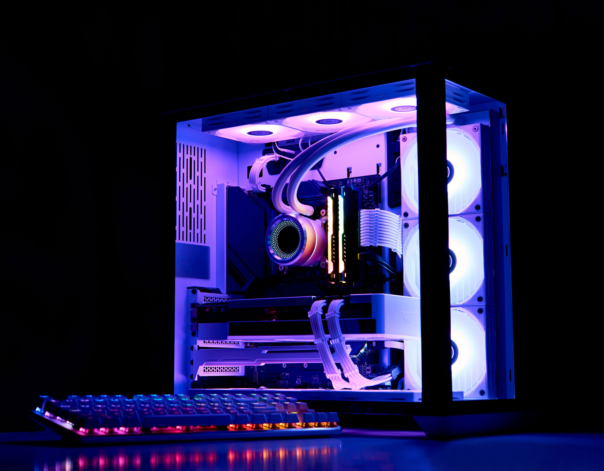
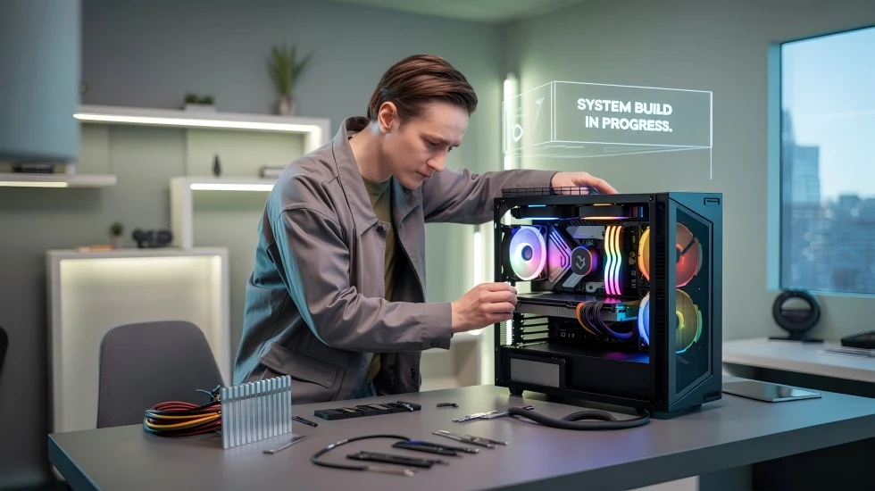

Build Your Own Computer
Building your very own PC is an amazing way to learn technology while also creating your own personal system that is special due to the fact it fits all your needs and it is built by you. While buying a prebuilt is an option, building a custom PC is a great way to add your individual element to the system.

The parts you choose can be based on your budget, the programs you use, the games you play, and the type of performance you want from your computer.
Why Build a Custom PC?
One of the biggest advantages of building a custom PC is having more control over the hardware inside the computer. You can choose the processor, graphics card, memory, storage, power supply, and other components yourself.
You are also the one to design how the PC will look making it will be a true reflection of your personality and taste. If you have a all white setup, you can choose white components to match or if you have a Batman themed setup you can have black with yellow or gold accents. The possibilities are endless.
Building a computer can also help you understand how computer hardware works. This knowledge can make it easier to upgrade, troubleshoot, and repair your computer in the future.
What You Will Learn
This website provides a beginner-friendly introduction to building a custom PC.
- Learn about the major components inside a computer
- Understand the basic steps for assembling a PC
- Learn how to choose compatible components
- Avoid common mistakes made by first-time builders
Getting Started
Start with the PC Parts page to learn what each component does. Then visit the Build Guide to learn how the parts are installed.

Finally, visit the Beginner Tips page for advice that can make your first PC build easier.
Share Your PC Build
Already have a custom computer? Choose or take a picture of your PC build.